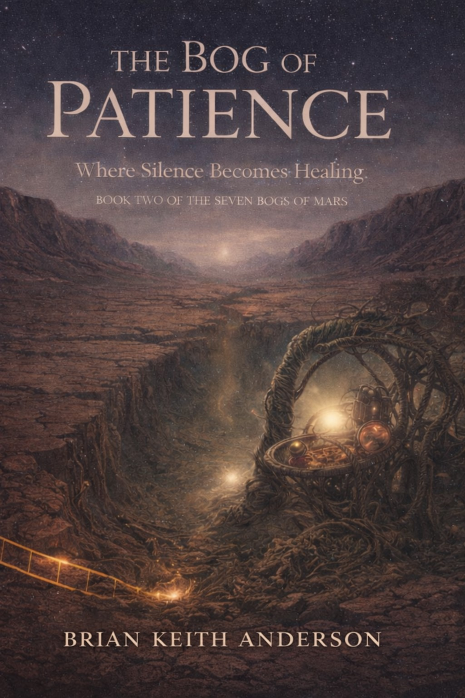
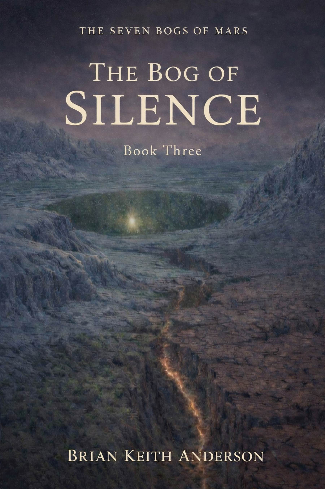
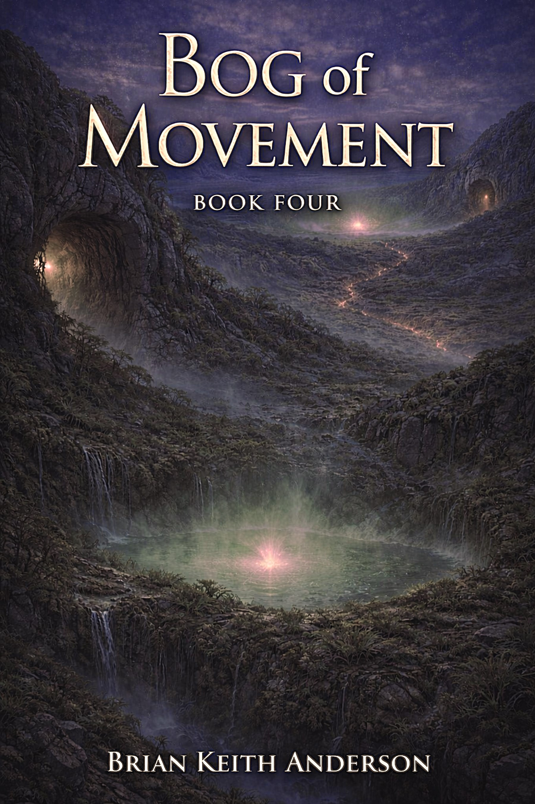
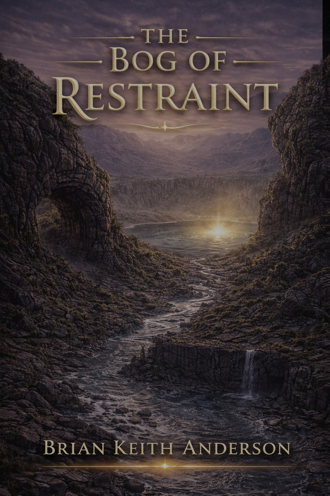
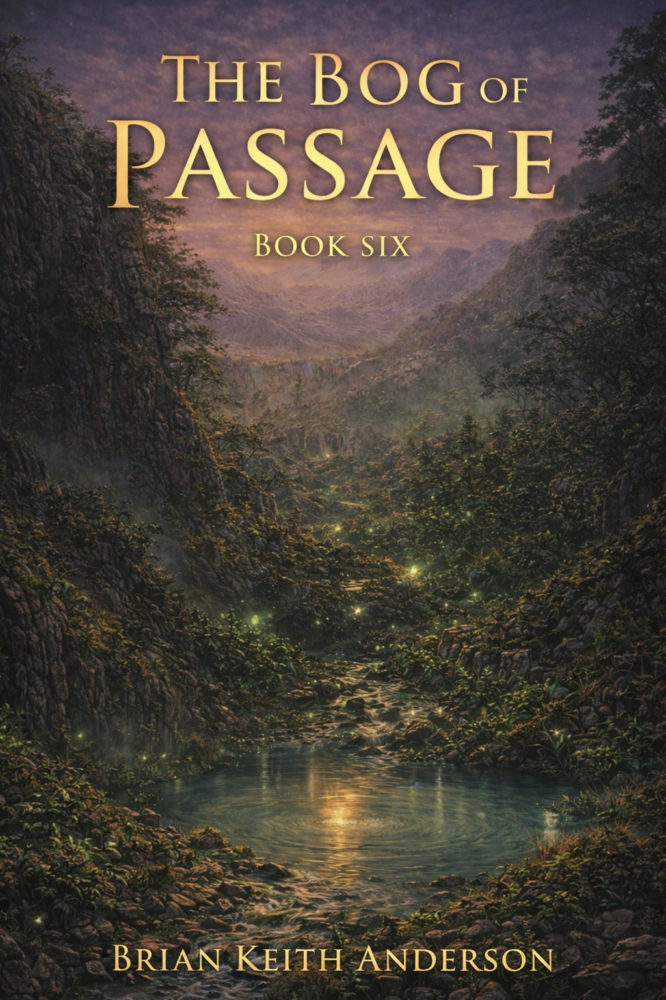

The Seven Bogs of Mars
Book One
Buy DirectSeven living bogs. Seven sleeping cities. One human whose footsteps carry the frequency of renewal. A restoration saga where patience, silence, movement, restraint, passage, and interconnection become the keys to waking a world.
Mars is not dead—only sleeping. Beneath seven ancient wetlands lie seven buried cities, each tied to a lesson of renewal. As Saxifraga and Asa move from bog to bog, the restoration of a world becomes a journey toward belonging, awakening, and the return of life itself.
Book One
Buy Direct
Book Two
Buy Direct
Book Three
Buy Direct
Book Four
Buy Direct
Book Five
Buy Direct
Book Six
Buy DirectBook Seven
Buy DirectBook Eight
Buy Direct